Jordi Saladrigas Trepat , de 38 años , jefe de sección de EL PERIÓDICO , murió ayer tras una lucha firme y sin flaquezas contra un cáncer de hígado , que le fue diagnosticado hace ocho meses.
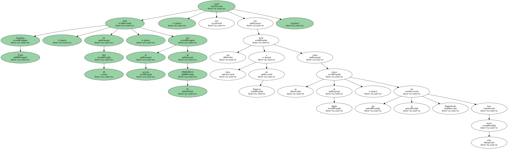Dada la complejidad del tumor , " el monstruo " , como lo llamaba , tuvo que ser tratado con una terapia experimental en el Hospital Mount Sinai de Nueva York.
Para estar cerca de los oncólogos se instaló en casa de unos familiares en San Juan de Puerto Rico , donde falleció.
Saladrigas pertenecía a una extraña especie de periodistas.
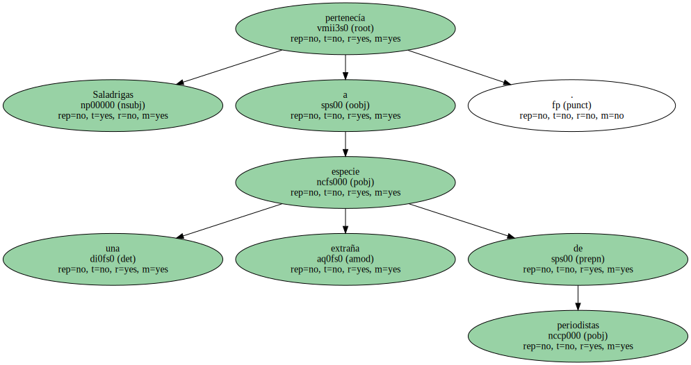No sólo le preocupaba qué se decía sino cómo se decía.
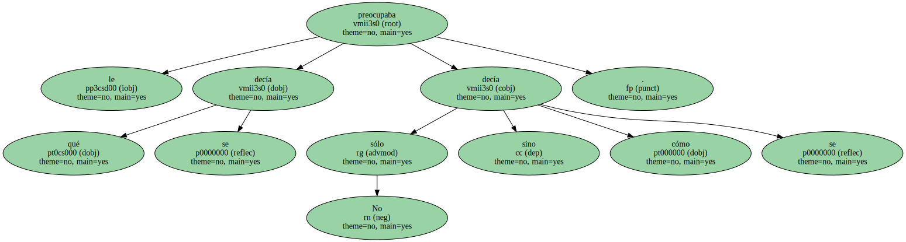Su dominio del lenguaje era extraordinario.
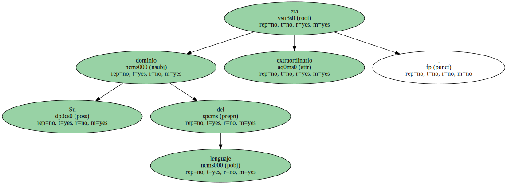Sabía colocar las palabras en el lugar que les estaba predestinado , adivinando su secreto.
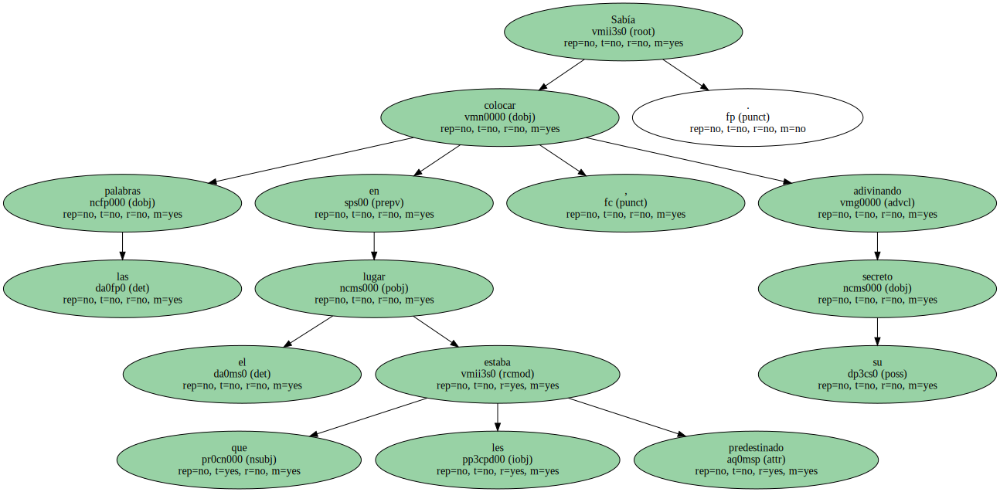Leer uno de sus reportajes era escuchar una música que siempre sonaba bien.
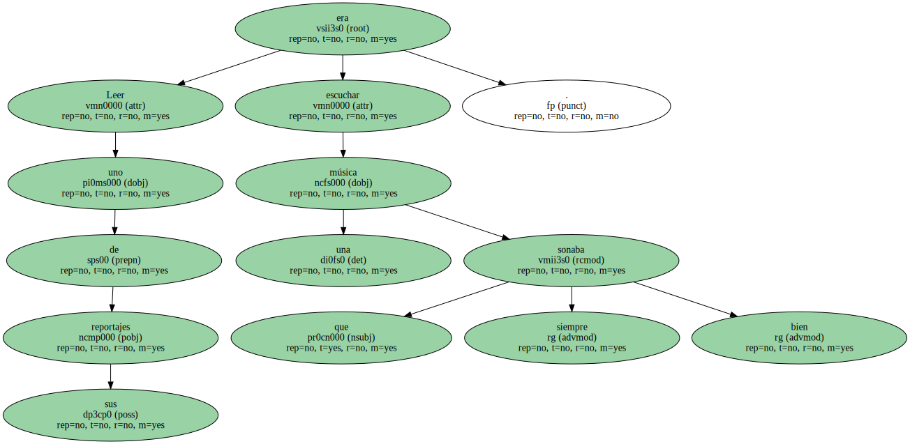Jamás tuvo una nota más alta que la otra , y eso es realmente difícil cuando se trabaja con un material tan inaprensible como es la realidad.
Saladrigas era un poeta en la piel dura de un periodista.
Y un hombre bueno , muy bueno , esa virtud tan escasa.
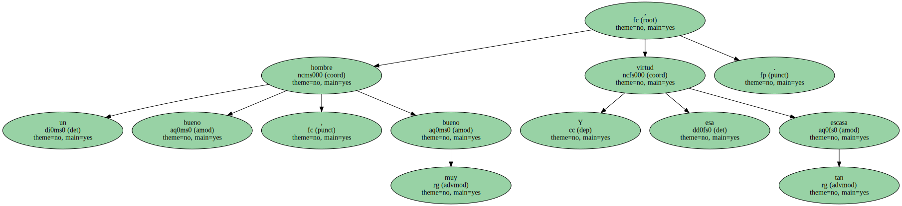Pese a su juventud su carrera tuvo algo de cross : se adaptó a las abruptas superficies.
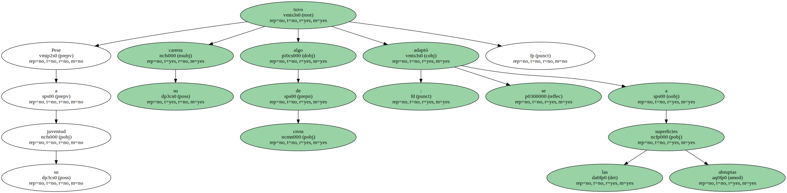Nada le fue regalado.
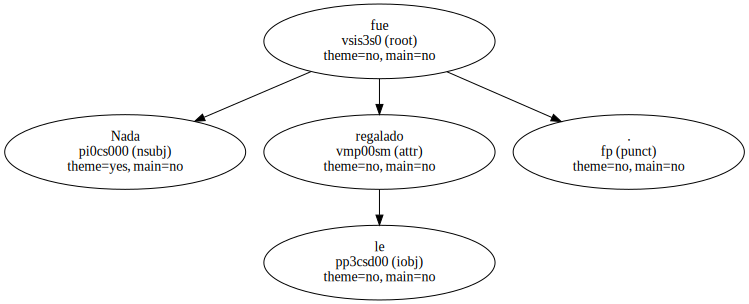Luchó por cada trabajo con una ilusión de primer día.
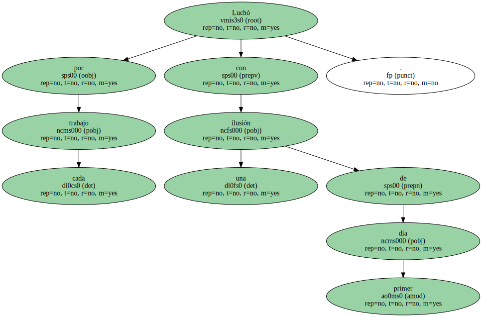Su fórmula era talento más esfuerzo.
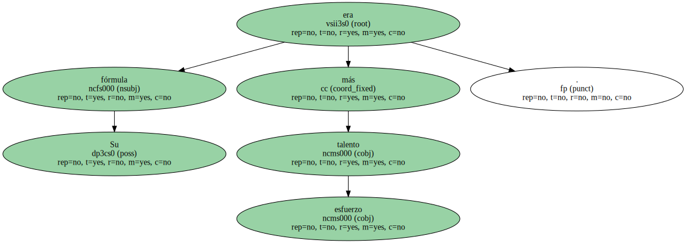El resultado de esa química fueron relatos profundos , como un viaje a Sicilia tras las huellas de pólvora de la mafia corleonesa o las entrevistas ejemplares a escritores que le asombraban , como Álvaro Mutis y Tomás Eloy Martínez.

Fueron precisamente las correrías de estos dos - - el uno , Premio Cervantes ; el otro , Premio Alfaguara - - lo que llenó su última semana.
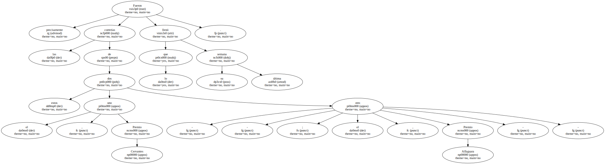Quería tener noticias frescas de Maqroll el Gaviero.
Mientras estudiaba Ciencias de la Información en la UAB ( donde se licenció en 1987 ) fue conserje en El Noticiero Universal.

" Conserje en prácticas " , como matizaba con su humor saludable.
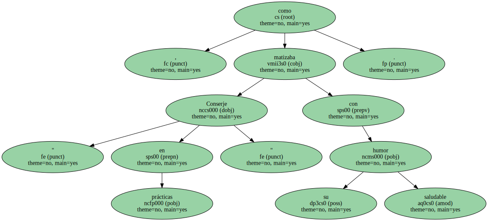Después bajó a platinas , o sea , las sentinas de la profesión , para picar crónicas al dictado.
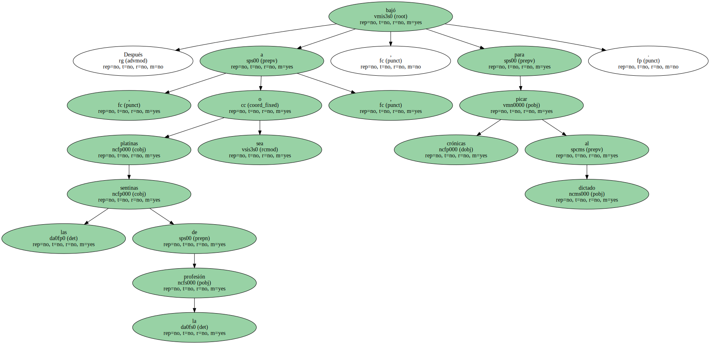Fue fichado por EL PERIÓDICO para la sección de edición , en la que demostró un puntillismo equiparable al de las bordadoras de encaje : ningún error ni desatino escapaban al ojo cazador.
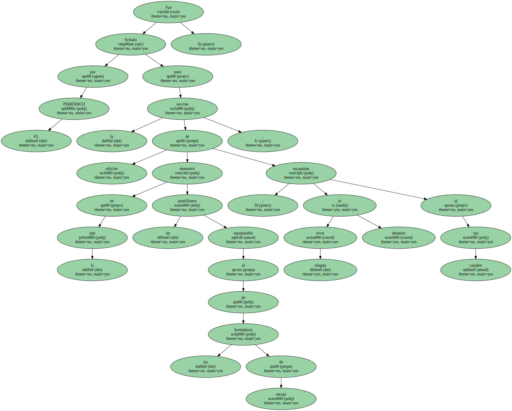En 1987 se instaló con una beca Fulbright en Nueva York , donde además de conocer revistas de distinto pelaje se casó con la puertorriqueña Marel Malaret , con la que ha tenido dos hijos , Amalia , de 8 años , y Mario , de 3 , y que ha sido cómplice e infatigable apoyo.
Volvió a Barcelona en 1992 para incorporarse como jefe de espectáculos de EL PERIÓDICO y siguió con ese mismo cargo en El Dominical.
Coescribió Barcelona , 13 ( 1997 ) , libro en el que demostró su arte y sensibilidad con retratos como el del poeta Brossa.
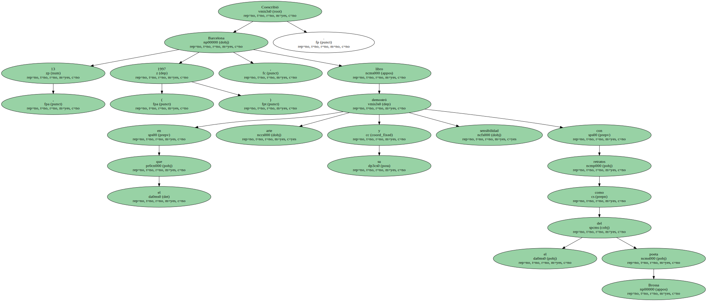Desde hacía años preparaba un libro hermosísimo sobre Puerto Rico.
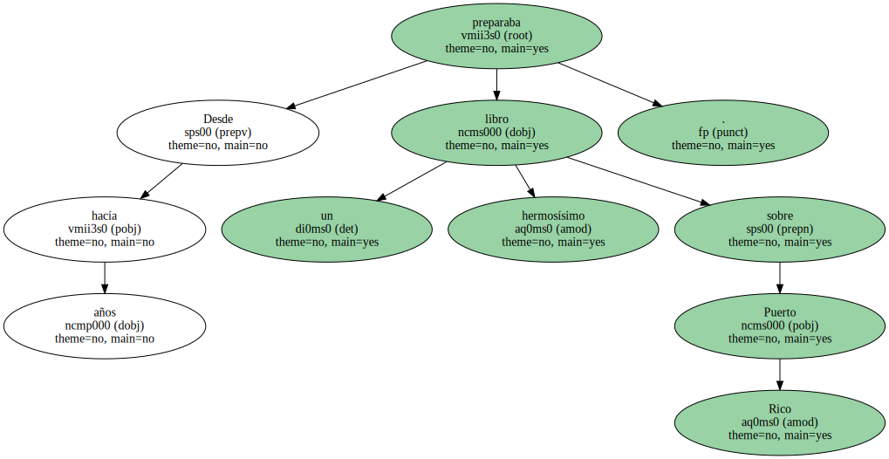Hasta el final , tuvo una fortaleza admirable.
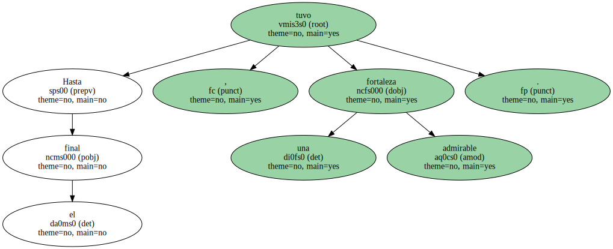Quienes le telefoneaban se llevaban una sorpresa : no encontraban a un hombre angustiado sino a un vitalista peleón.
Tenía al cáncer amedrentado.
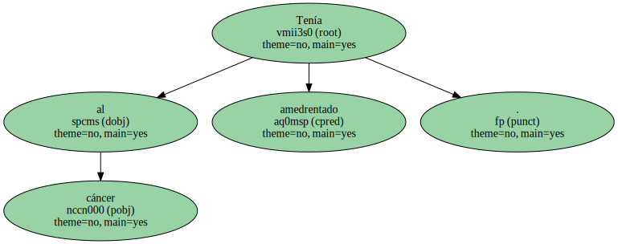Pero la enfermedad fue cobarde y actuó vilmente desde su interior.
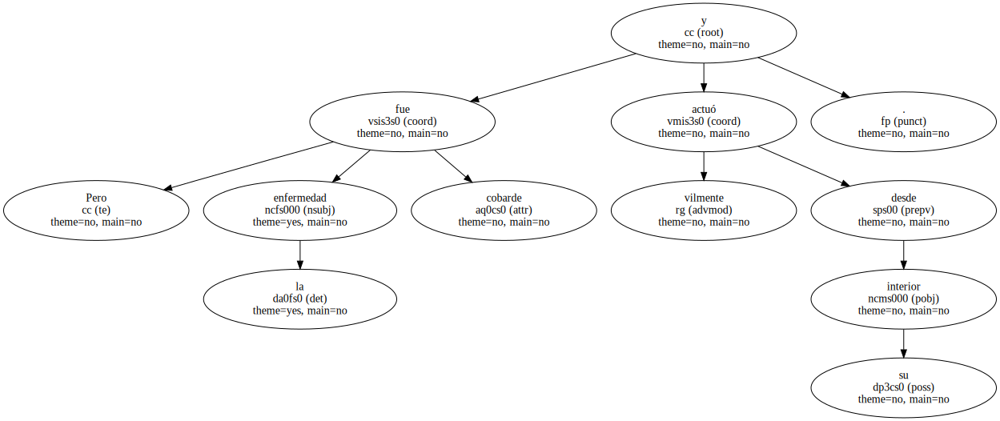